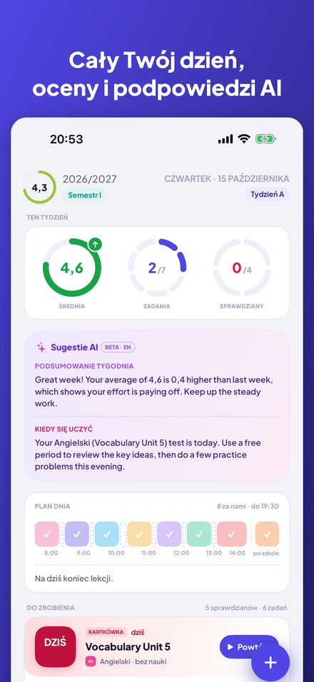
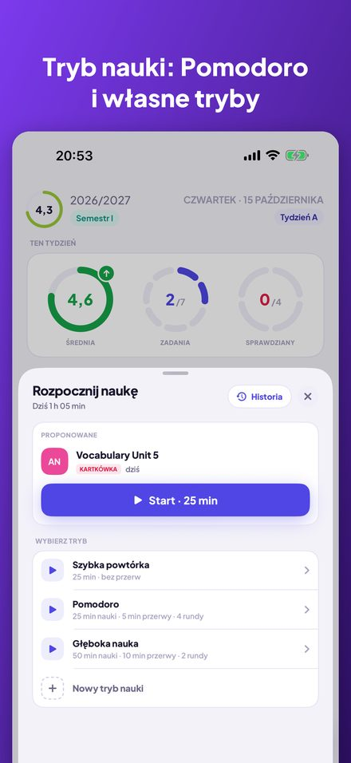
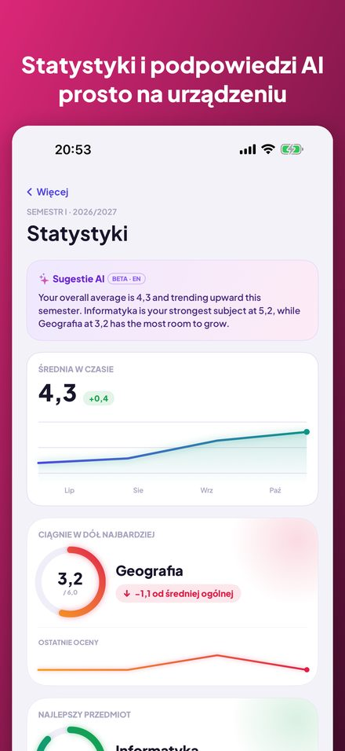
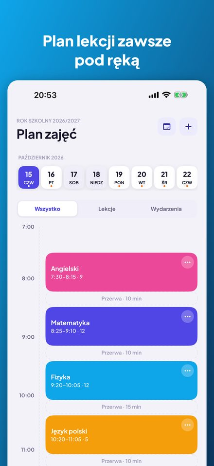
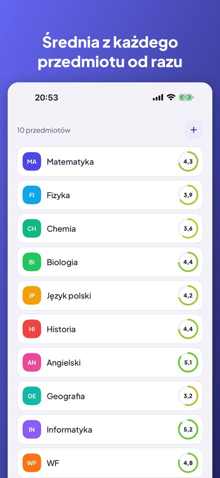
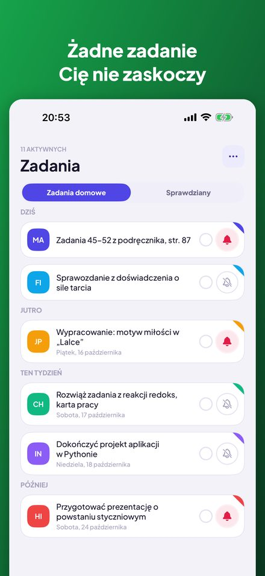

Kajet to planer ucznia i studenta. Cały dzień na jednym ekranie, oceny ze średnią, zadania i sprawdziany z przypomnieniami oraz timer nauki z Pomodoro. Bez konta, bez reklam.






Pierścienie ze średnią tygodnia, zadaniami i sprawdzianami, oś czasu dzisiejszych lekcji i lista „Do zrobienia”, którą odhaczasz jednym dotknięciem.
Widok dnia i tygodnia, tygodnie A i B, odwołane lekcje, zastępstwa, zmiany sal i zajęcia pozaszkolne z przypomnieniem o wyjściu.
Średnia arytmetyczna albo ważona z własnymi kategoriami, poprawy i komentarze. Statystyki pokazują trend, najlepszy przedmiot i ten, który ciągnie w dół.
Punkty ECTS, oceny końcowe, średnia ważona ECTS i własny próg stypendium razem z ocenami, których jeszcze potrzebujesz.
Pogrupowane na dziś, jutro i ten tydzień, z przypomnieniami dzień lub trzy dni wcześniej. Sprawdzian zamienisz na ocenę jednym ruchem.
Timer z własnymi trybami: odliczanie albo Pomodoro z rundami i przerwami. Powiąż sesję ze sprawdzianem i zobacz historię nauki.
Najbliższa lekcja na ekranie głównym i ekranie blokady. Zapytaj Siri o następną lekcję, zadania na dziś lub średnią albo dodaj ocenę głosem.
Bez konta i reklam, a dane zostają na Twoim iPhonie. Opcjonalne podpowiedzi AI działają w całości na urządzeniu dzięki Apple Intelligence.
Stworzony z myślą o polskiej szkole i uczelni (oceny 1–6, skala 2,0–5,0, ECTS), ale przydatny wszędzie. Dostępny po polsku, angielsku, niemiecku, francusku, hiszpańsku, włosku, japońsku i chińsku. Na iPhone'a z iOS 17 lub nowszym; podpowiedzi AI wymagają iOS 26 i Apple Intelligence.